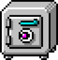
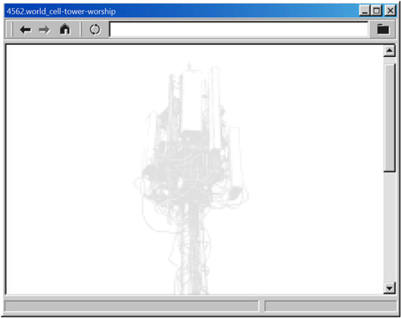
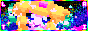

nuBlogv2.1
my domain is my domain, i am the oldest i have ever been and the youngest i will ever be, and the world i was born into no longer exists! this site's birthday is march 23~ 2025 ~ i am heading southonone, taking badc0vers, trying not to get llostinthesauce ~ my domain is my domain, i am the oldest i have ever been and the youngest i will ever be ~
click for canvas →
photos · july 2026 →
recent · across the site →
about
links · badges · cool sites



enter →